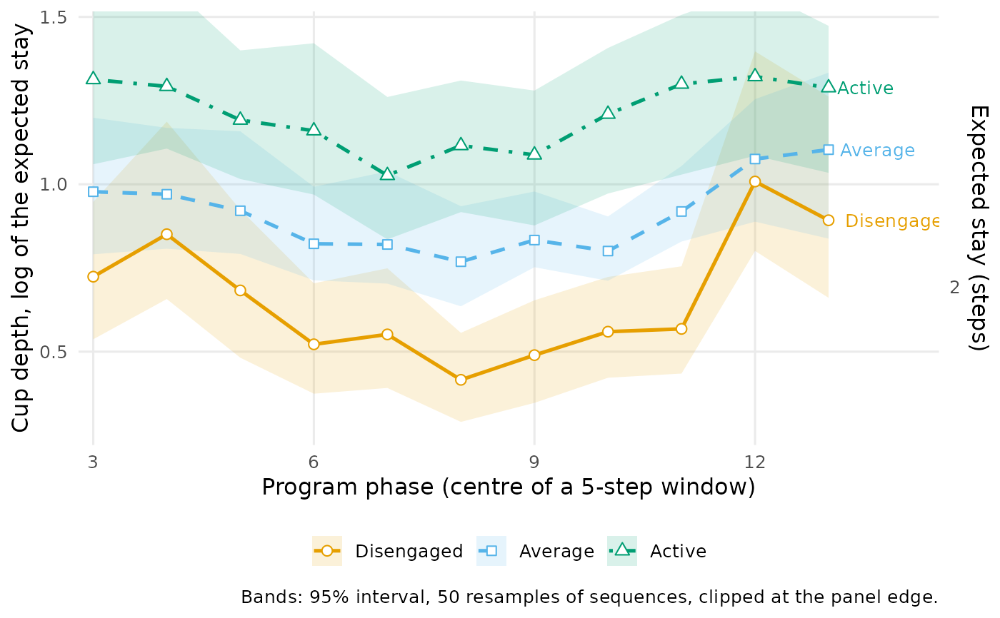
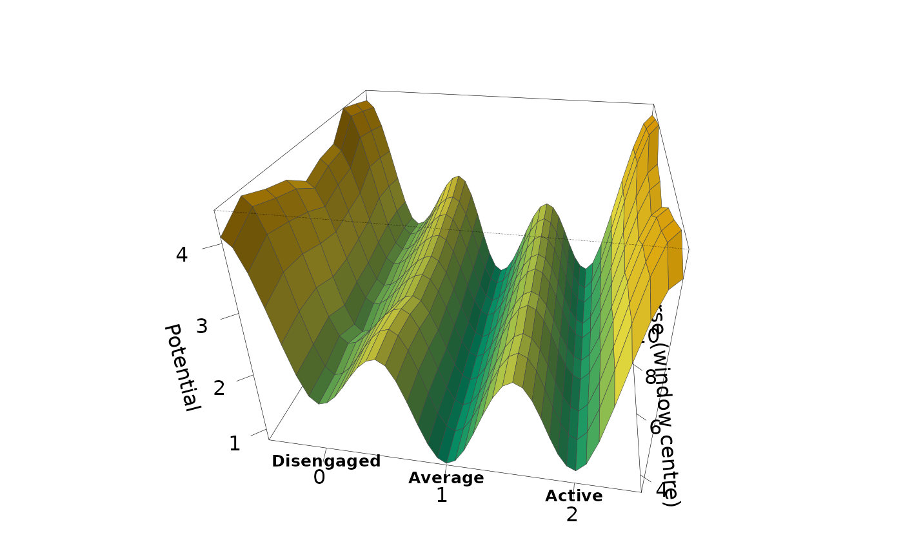

Stability Landscape Along the Program or a Covariate
Source:R/stability_landscape.R
landscape_trend.RdThe landscape of stability_landscape() traced along a second
axis. The axis is either the program phase, along = "phase": the
landscape is estimated from the transitions inside a sliding window of
window time steps; or a numeric per-sequence covariate such as a
grade, along = "grade": at each value of the covariate it comes
from the k nearest sequences, weighted by a tricube kernel
(Cleveland 1979). Intervals come from resampling whole sequences.
Two heights are available. depth = "stay" (default) is the depth
of stability_landscape(), the log of each state's expected stay,
\(-\log(1 - P_{ii})\). depth = "occupancy" is the quasi-potential
\(-\log \pi_i\) of the stationary distribution, with ridges at
\(-\log\) of the symmetrised probability flux
\((\pi_i P_{ij} + \pi_j P_{ji}) / 2\) between neighbouring states
(Wang et al. 2008): a low cup is a state the process spends much of its
time in, a high ridge a switch it rarely makes.
Usage
landscape_trend(
x,
along = "phase",
depth = c("stay", "occupancy"),
states = NULL,
window = 5L,
k = 30L,
n_grid = 20L,
iter = 500L,
ci_level = 0.95,
seed = NULL
)
# S3 method for class 'net_landscape_trend'
summary(object, ...)
# S3 method for class 'net_landscape_trend'
print(x, digits = 2, ...)
# S3 method for class 'net_landscape_trend'
plot(x, type = c("lines", "surface"), theta = 10, phi = 30, ...)Arguments
- x
A transition network from
build_network()(method"relative"or"frequency"), a grouped one, or a wide sequence data frame. A covariate is read from the network's metadata, whichbuild_network()fills with the numeric columns of a wide data frame. For theprint()andplot()methods: an object of classnet_landscape_trend.- along
"phase"(default), or the name of a numeric per-sequence covariate.- depth
"stay"(default) or"occupancy", see above.- states
Character vector naming every state once, in drawing order. Default: alphabetical.
- window
Integer. With
along = "phase": time steps per window. Default 5.- k
Integer. With a covariate: nearest sequences per slice. Default 30 (capped at the number of sequences).
- n_grid
Integer. With a covariate: slices between its 5th and 95th percentile, with the full range used if these coincide. Default 20.
- iter
Integer. Bootstrap resamples of sequences. Default 500.
- ci_level
Numeric in (0, 1). Interval level. Default 0.95.
- seed
Integer or
NULL. Seed for the resampling, scoped to the call.- object
A
net_landscape_trendobject (forsummary()).- ...
Ignored.
- digits
Integer. Decimal places in
print(). Default 2.- type
In
plot():"lines"(default), one line per state with its interval band; or"surface", a 3Dpersp()landscape with the states across and the second axis in depth, one panel per network on a shared height scale.- theta, phi
Numeric. In
plot(type = "surface"): viewing angles.
Value
An object of class "net_landscape_trend".
In summary(): a data frame with one row per network,
position and feature: group, along, value (window
centre or covariate value), label (window steps or value),
feature ("well", or "ridge" with
depth = "occupancy"), state (a state, or two for a
ridge), the height (depth for "stay", potential
for "occupancy"), ci_lower, ci_upper, dwell
("stay" only) and n_from (transitions out of the state in
the window, or their weighted sum in the slice; wells only).
In print(): x, invisibly.
In plot(): with type = "lines" a ggplot
object; with type = "surface" x, invisibly, after drawing.
Details
Network input replays per-sequence weighting, concatenation and boundary markers. Concatenated sequences are the resampling units. With a covariate, its value must be constant within each concatenated unit. Scaled, thresholded or otherwise modified networks whose weights do not match their stored sequences are refused; pass the original sequences to estimate a new landscape. Observed shares count prepared positions without sequence weighting. Phase windows retain the full sequence's weight.
With depth = "stay", a window or slice in which a state is never
left gives an infinite depth, and one in which it does not occur gives
NA. With depth = "occupancy", a window whose chain has no
unique stationary distribution is NA throughout. Such points are
kept in summary(), left out of the lines and the surface, and
counted in the plot caption. Interval bands are clipped at the panel
edge, which is set by the estimates. Consecutive windows share all but
one step and neighbouring slices most of their sequences, so neighbouring
points are not independent.
Errors
nestimate_not_markov; nestimate_bad_input for an unknown,
non-numeric or constant covariate, bad states, or a window longer than
the sequences; nestimate_landscape_unestimable for fewer than five
usable sequences.
References
Cleveland, W. S. (1979). Robust locally weighted regression and smoothing scatterplots. Journal of the American Statistical Association, 74, 829–836.
Kramers, H. A. (1940). Brownian motion in a field of force and the diffusion model of chemical reactions. Physica, 7, 284–304.
Wang, J., Xu, L., & Wang, E. (2008). Potential landscape and flux framework of nonequilibrium networks. PNAS, 105, 12271–12276.
Examples
net <- build_network(trajectories, method = "relative")
trend <- landscape_trend(net, along = "phase",
states = c("Disengaged", "Average", "Active"), iter = 50, seed = 1)
trend
#> Stability landscape along program phase (5-step windows): 3 states, 1 network, 50 resamples
#>
#> Cup depth (log of the expected stay; higher = more stable) at the two ends and its range:
#> state first at_first last at_last min max
#> Disengaged 1-5 0.72 11-15 0.89 0.42 1.01
#> Average 1-5 0.98 11-15 1.10 0.77 1.10
#> Active 1-5 1.31 11-15 1.29 1.03 1.32
# \donttest{
plot(trend)

occupancy <- landscape_trend(net, depth = "occupancy", window = 6,
states = c("Disengaged", "Average", "Active"), iter = 50, seed = 1)
plot(occupancy, type = "surface")

# }